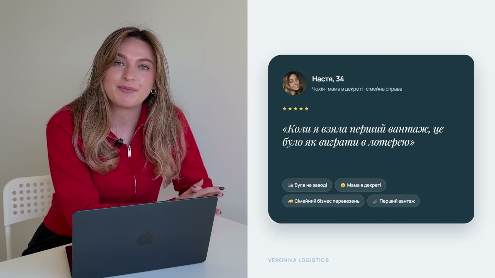
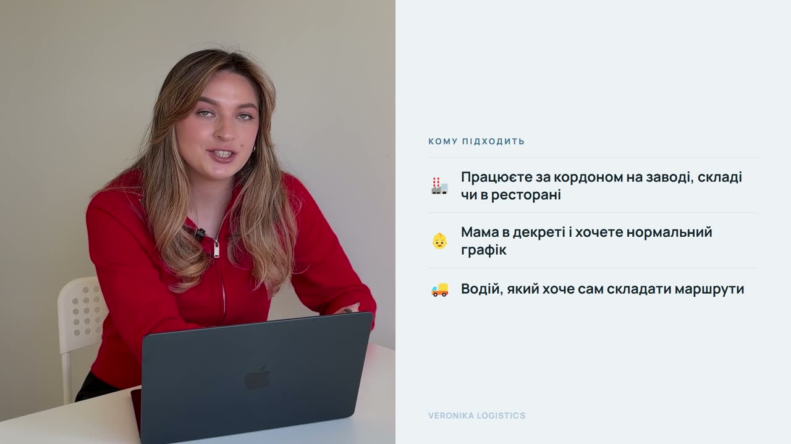
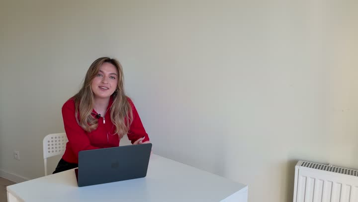

Вероніко, перші блоки вже змонтовані, і виглядає круто 🔥 Але урок перезнімаємо повністю, від першого до останнього блоку: так він буде цілісним, а ти в кадрі виглядатимеш набагато краще. Тут усе по кроках: як виглядатиме готове відео, як поставити камеру, як знімати із суфлером і весь текст уроку.
Камера на рівні очей, знімаєш у додатку-суфлері, текст іде одразу під камерою. Знімаєш блоками, по одному, і після кожного тиснеш «Знято».
Перші блоки я вже змонтувала так: ти — на лівій половині кадру, презентація — на правій. Слайди міняються під те, що ти говориш: картки учнів, списки, твої дипломи, запис екрана біржі.

Так буде в уроці
Ще приклад
Минулого разуТелефон стояв вище за тебе і далеко: видно весь стіл, кришку ноутбука, а над головою пів кімнати. Так ти виглядаєш меншою, і пропадає контакт із глядачем.
Знімаєш прямо в додатку-суфлері: він записує відео на фронтальну камеру, а текст іде одразу під об'єктивом. Так очі майже не відходять від камери і не видно, що ти читаєш.
Блоків 8–16 я не отримала. У нумерації твоїх файлів є пропуски, глянь, будь ласка, що там, і скинь, якщо це урок:
Як за шість тижнів з нуля освоїти професію міжнародного логіста і вже через два тижні після навчання піти на першу співбесіду — без досвіду, без диплома логіста і без роботи руками.
У цьому відео я покажу вам повну карту шляху з п'яти кроків — від нуля до першої роботи. Проведу по одному реальному рейсу з мого екрана. Розповім, як мій учень з офіціанта став диспетчером на двадцять водіїв.
І в кінці скажу, як потрапити до мене на безкоштовний розбір, де ми складемо ваш особистий план.
Це не теорія. Я сама працюю міжнародним логістом: шукаю вантажі і працюю з водіями. І вже навчила цієї професії понад п'ятнадцять людей особисто.
Сергій до курсу був офіціантом. Через два тижні після навчання пройшов співбесіду, а зараз працює у великій транспортній компанії у Вроцлаві.
Настя — мама в декреті з Чехії. Вже взяла свій перший вантаж і каже, що це як виграти в лотерею.
Богдана разом із чоловіком веде власну транспортну компанію: замінила йому і логіста, і бухгалтера.
Про кожного розповім детальніше.
У вас є робота, і звільнятися страшно, бо це хоч якась стабільність.
Але щодня одне й те саме: завод, склад, ресторан, нічні зміни. Ви втомлюєтесь, а розвитку — нуль.
А якщо ви в декреті — ви вже розумієте, що на нічні зміни не повернетесь, бо дитина потребує маму.
І найнебезпечніше — що так може минути і рік, і три. Думка «колись потім» перетворюється на «вже пізно».
А тепер уявіть роботу, де цінують голову, а не руки. Де ви сидите за ноутбуком — вдома чи в офісі — і керуєте рухом вантажів по всій Європі.
Логіст не водить фуру. Він знаходить вантаж, домовляється про ціну, планує маршрут і веде водія.
І поки люди купують товари, ця робота потрібна завжди. А логістів, які справді розуміють процес, зараз дуже не вистачає.
Це для вас, якщо ви працюєте за кордоном на заводі, складі чи в ресторані і хочете роботу з ноутбука.
Якщо ви мама в декреті і шукаєте професію з нормальним графіком, без нічних змін.
Якщо ви водій і хочете пересісти з-за керма за ноутбук — самі складати маршрути.
Або якщо у вашої родини є бізнес перевезень, і ви хочете в ньому працювати.
Далі я покажу вам повну карту шляху з п'яти кроків і реальний рейс зі свого екрана. Додивіться — це найцінніша частина.
А якщо вже зараз відчуваєте, що це про вас, — під відео є кнопка запису на безкоштовний розбір. Можна записатися, навіть не додивившись.
Я теж починала з нуля. Без досвіду, без знайомих у логістиці.
П'ять років навчалась у Польщі — бакалавр і магістр. А на першій роботі зрозуміла: половини того, що реально треба, в університеті не вчать.
Перші помилки з документами, перші невдалі рейси, незадоволені клієнти — все набивала сама.
Сьогодні я веду вантажі по всій Європі. І все, що набивала роками, зібрала в одну систему — щоб ви пройшли цей шлях за тижні, а не за роки.
Отже, п'ять кроків від нуля до першої роботи.
Крок перший. Зрозуміти, як влаштована логістика. Хто такий диспетчер, а хто спедитор. Які бувають машини і що в яку вміщається. На співбесіді про це питають — і саме на цьому сиплються.
Крок другий. Вивчити Європу очима логіста. Ключові дороги, платні дороги, регіони, звідки добре виїжджати, а куди краще не відправляти машину. Поштові індекси і ставки.
Крок третій. Час праці водія і тахограф. Помилка тут — це штраф для перевізника і ваша репутація.
Крок четвертий. Біржі вантажів і документи. Як знайти вантаж, домовитися про ціну, що перевірити в замовленні, як оформити CMR і довести рейс до оплати.
Крок п'ятий. Резюме, співбесіда і перша робота. Що писати в резюме, які питання ставлять і куди стукатися.
Пройшли ці п'ять кроків — і ви вже не «людина з вулиці», а спеціаліст, з яким є про що говорити на співбесіді.
Ось як це виглядає наживо.
Біржа вантажів — ось вантаж: звідки, куди, яка ставка. Прикидаю, чи він вигідний: рахую кілометри і ставку за кілометр.
Домовились — приходить замовлення, zlecenie. Перевіряю в ньому дати, адреси, ціну.
Водій завантажився — CMR. Розвантажились — документи і оплата.
Бачите? Це не магія, а зрозумілі кроки. І всьому цьому можна навчитися з нуля.
Сергій працював офіціантом у Польщі. Жодного досвіду в логістиці. Пройшов навчання за місяць, через два тижні пройшов співбесіду, а через місяць після курсу вже повноцінно працював. Зараз він диспетчер і відповідає за двадцять водіїв.
Настя — мама в декреті, живе в Чехії. До цього — завод, зміни по десять годин, нічні. Зараз вона на практиці і вже взяла перший вантаж. Каже, що це відчуття — як виграти в лотерею.
Богдана — юрист за освітою, працювала офіціанткою і косметологом. Зараз разом із чоловіком веде власну транспортну компанію: сама шукає вантажі і веде клієнтів.
Чесно: гарантію працевлаштування не дасть ніхто — ні курс, ні університет. Але кожен із них почав з нуля. Різниця лише в тому, що вони не відклали рішення.
«У мене немає досвіду». У жодного з моїх учнів його не було. Навчання починається з основ, а для документів є готові шаблони.
«Це складно». Ви щойно бачили: п'ять кроків і один рейс — і вже зрозуміло, як усе працює.
«Знайду все сам в інтернеті». У вас два шляхи. Довгий — роками збирати інформацію по шматочках і вчитися на власних штрафах. Або швидкий — пройти готову систему з людиною, яка щодня в цій роботі.
«Немає часу». Старт будь-коли, уроки можна дивитися з телефона у вільну хвилину, доступ до матеріалів — на рік.
І якщо ви вже бачите себе в цій професії — натисніть кнопку під відео і запишіться на розбір.
Тепер про наступний крок. Я проводжу безкоштовний розбір — двадцять хвилин онлайн.
Ми розберемо вашу точку А: чим ви займаєтесь зараз, який у вас досвід, мова, скільки часу можете приділяти.
Я складу вам особистий план входу в логістику: з чого почати, на що звернути увагу, скільки часу це займе саме у вас.
І чесно скажу, чи вам це підходить. Якщо ні — так і скажу. Навіть якщо ви не підете на навчання, ви підете з розмови з чітким планом.
Якщо на розборі ми зрозуміємо, що вам підходить, — ось що ви отримаєте.
Відеокурс з восьми модулів — усі п'ять кроків, які я показала, з презентаціями і домашніми завданнями на реальних маршрутах.
Бонуси. «Карти регіонів Європи» — де брати вантажі, а куди не їхати. «Готові шаблони документів» — zlecenie, CMR. «Секретні маршрути і дороги» — те, чого немає у відкритому доступі. «Відеоархів реальних рейсів» — завантаження, корки, поломки і що з цим робити.
І доступ до всього — на рік: можна повертатися до матеріалів скільки завгодно разів.
А в Індивідуальному форматі я ще й особисто поруч: щотижня дзвінок, перевіряю кожне домашнє, розбираю ваше резюме і роблю з вами пробну співбесіду.
І моя гарантія: протягом року ви можете проходити навчання скільки завгодно разів. А питання ставите мені — на групових розборах або особисто в Індивідуальному форматі. Ви не залишитесь сам на сам з відео.
Навчання коштує від чотирьохсот євро, і його можна оплатити частинами.
Точний формат і ціну під вас ми підберемо на розборі.
І одразу чесно: навчання не для вас, якщо ви шукаєте швидкі гроші без зусиль або не готові приділяти навчанню хоча б кілька годин на тиждень.
Я сама працюю логістом, тому на навчання беру не більше п'яти-шести людей на місяць — щоб кожному приділити увагу.
А тим, хто після розбору вирішить не відкладати, я даю бонус — розповім про нього на розмові.
Тож якщо ви дивились і думали «це про мене» — натисніть кнопку під відео прямо зараз і оберіть зручний час. До зустрічі на розборі!
Veronika Logistics · внутрішня сторінка, не пересилайте посилання.